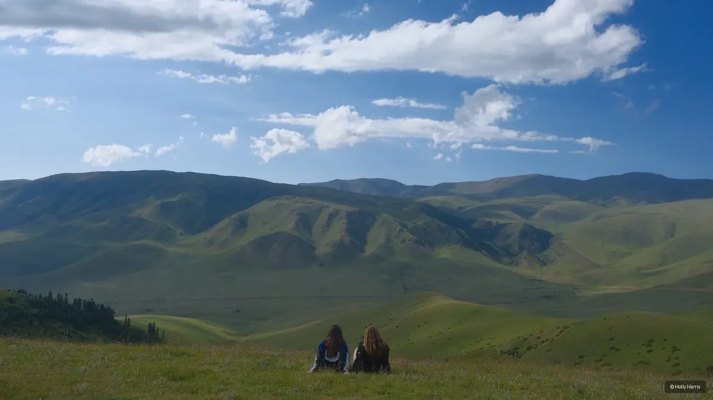
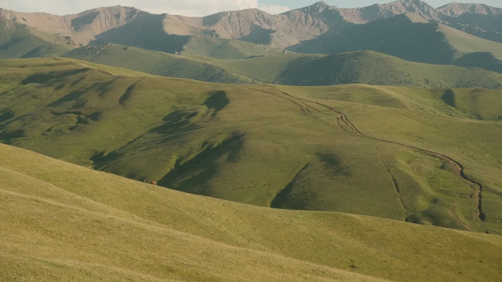
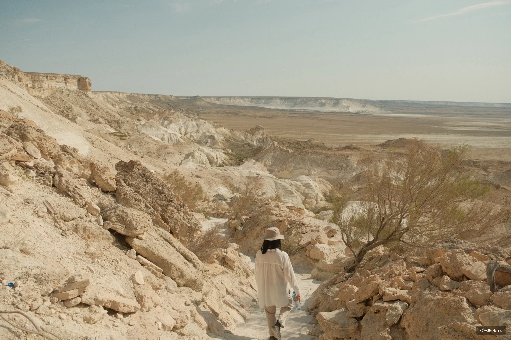

U.S.–Russia Relations
Partnership, mistrust, diplomacy, and the choices that shaped the relationship after the Soviet collapse.
Historian · U.S.–Russia Relations
American foreign policy, Russia, and the contested international order of the 1990s.


I am a historian of U.S.–Russia relations and American foreign policy, with a particular focus on the political possibilities and failures of the 1990s.
My work asks how states use power, how international orders are constructed, and why cooperation breaks down. Those questions first emerged through research on an American airman held as a prisoner of war by Nazi Germany. Russian-language study and archival research later carried them into the post-Soviet era, where my dissertation examines U.S.–Russia relations, security cooperation, and competing visions of world order.
Outside the archive, I photograph cities and landscapes as another way of paying attention to place, memory, and political space.

The 1990s were not simply an interval between the Cold War and renewed rivalry. They were a contested attempt to define partnership, sovereignty, economic reform, and the rules of international security.
My dissertation reconstructs that effort through diplomacy, economic assistance, security cooperation, and competing visions of political order. It asks how American and Russian officials imagined the relationship after the Soviet collapse, where their assumptions converged, and how disagreement hardened into mistrust.

Available for interviews · background · podcasts · panels
Partnership, mistrust, diplomacy, and the choices that shaped the relationship after the Soviet collapse.
Primacy, intervention, economic assistance, security cooperation, and America’s role in the 1990s.
Sovereignty, institutions, hierarchy, and competing visions of international cooperation.
American prisoners of war, military institutions, veterans, and the public memory of conflict.
Southern Methodist University
Southern Methodist University
Texas Christian University
Clinton Foundation
American Councils
United States Air Force Academy
Co-editor · University of Virginia Press
In The US Military and the Holocaust · Texas A&M University Press
Selected photographs from Kazakhstan, Summer 2025—a visual record of place, movement, and observation alongside the written one.



